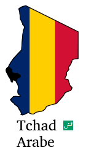
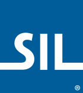
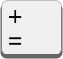
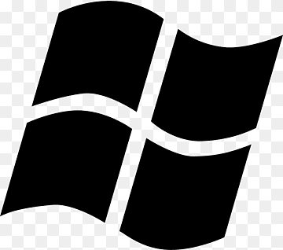
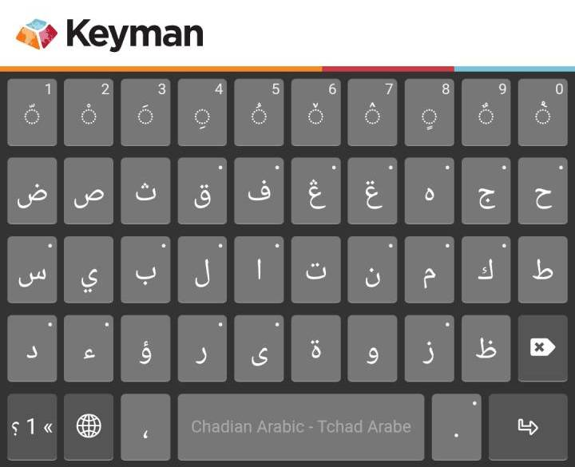
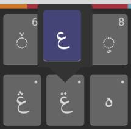
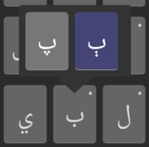
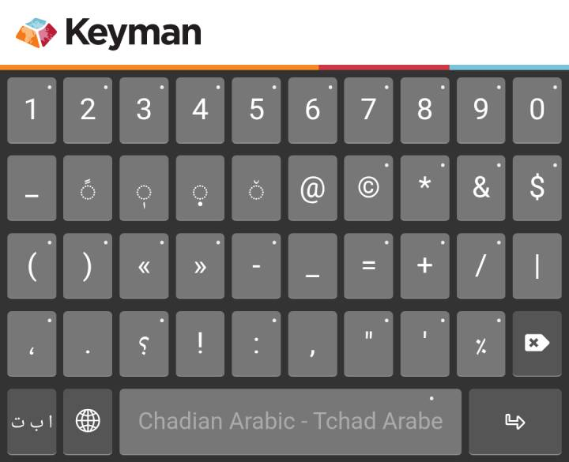

Chad Arabic Keyboard for Keyman
by SIL Chad
Welcome to the Chad Arabic Keyboard!
This keyboard, maintained by the Language Technology team of SIL Chad,
allows you to type all of the special characters needed to write the languages of Chad in Arabic script.
The Chad Arabic keyboard behaves differently depending on whether you are using it on a Physical keyboard (Windows, Mac, Linux; also Android and iOS with external keyboards) or on a virtual Touch keyboard (Android, iOS). Choose the appropriate section below to find instructions for your type of keyboard.
Physical keyboard
Using the keyboard
To learn how to type a character with this keyboard, refer to the graphical keyboard layout below. The characters to the left on each key cap are typed with a simple tap (bottom), or by holding down the Shift key and tapping (top). The characters to the right on each key cap are typed with the help of a special “Chad” key. This key is found just to the left of the Backspace key, and will likely appear something like this on your keyboard:

(for typing the equals and plus signs). On the keyboard layout below, this key appears with a Chadian flag, to remind you that the “special” characters of Chad are typed with this key.To type a character, find the character you want to type on the graphical keyboard layout below, and note the position of the key on the keyboard and the position of the character on the key cap (one of three positions). Depending on the position of that character on the key cap, you might need to tap the “Chad” key first or hold down the Shift key. We’ll take as an example the key just to the right of the Tab key. This might show as Q (on QWERTY keyboards) or as A (on AZERTY keyboards), but note that it has Arabic script letters on our keyboard layout below. And this is how you type the letters in the different positions:
|
Hold down Shift and tap the key → Simply tap the key → |
ڔ ◌َض |
← tap the Chad key, then tap the key |
Note that you can type the equals sign by tapping the “Chad” key twice, since the “=” character appears in the lower-right corner of that key cap.
Chad Arabic Keyboard layout

Typing short vowels
Note that some of the characters appear with dotted circles: ◌. These indicate vowels which are combined with the previous character typed. So if you type “س” and then type the character “◌َ”, then the resulting character on the screen will be “سَ”. Type “ك” plus “◌ِ” to get “كِ”.
Additional characters
There are some additional characters that can be typed with this keyboard that are not displayed on the graphical keyboard layout above. In most cases they are modified forms of other characters that are on the layout.
| type: | to get: | type: | to get: | type: | to get: |
|---|---|---|---|---|---|
| -- | – | $$ | € | @@ | © |
| --- | — | $$$ | £ | @@@ | ℗ |
| @@@@ | ® |
In addition, the “Chad” key plus space ( =⎵ ) gives a no-break space (NBSP), and typing space bar again ( =⎵ ⎵ ) gives a narrow no-break space (NNBSP). The “Chad” key plus two hyphens ( =-- ) gives a no-break hyphen.
On a phone you do not need most of these: the dashes, the currency signs and the copyright signs are all a single long press away on the symbol layer, and the space bar there hides NBSP and NNBSP. The no-break hyphen is only available on a physical keyboard.
Touch keyboard
Once you install and activate this keyboard on your touch device, the main keyboard layer will appear. You will find most of the characters that you need for writing Arabic script text on this layer. You reach the second layer by tapping the ؟1« key in the lower left of the keyboard; it holds the symbols and numbers.
The main layer

The consonants are found on the middle three rows, roughly laid out the same as a standard Arabic keyboard. The top row holds the (combining) vowels you need most often, together with the shadda, which marks a doubled consonant, and the sukun, which marks a consonant with no vowel after it. A few less frequently used vowels are found on the symbol layer.
Reaching the hidden characters
Many keys have a small mark in the upper corner. That means there are more characters hidden underneath. There are two ways to type them.
Long press. Hold your finger on the key. A small menu opens above it with the extra characters. Slide your finger onto the one you want, then lift. Use this method while you are still learning where the letters are. A key may have one hidden character or two. On the left below is the menu after long pressing the AIN WITH TWO DOTS ABOVE ݝ key, which has one hidden character; on the right, the menu on the BEH ب key, which has two:


Tap and flick up. Once you know what is hidden under a key you do not have to wait for the menu to pop up. Tap the key and flick your finger upwards in one movement, and the hidden character is typed immediately. Where a key has two hidden characters, flick up and slightly to the left or right to choose between them. No key has more than two hidden characters, so this is quick to learn, and it makes the hidden characters almost as fast to type as the ones on the key caps.
Here is every key on the main layer that has characters hidden under it:
| key: | hidden: | key: | hidden: | key: | hidden: | key: | hidden: | key: | hidden: |
|---|---|---|---|---|---|---|---|---|---|
| ◌ّ | 1 | ◌ْ | 2 | ◌َ | 3 | ◌ِ | 4 | ◌ُ | 5 |
| ◌ٚ | 6 | ◌ٛ | 7 | ◌ٍ | 8 | ◌ٌ | 9 | ◌ٝ | 0 |
| ق | ࢥ | ف | ࢤڤ | ڠ | غ | ݝ | ع | ه | ۀ |
| ج | ڃخ | ح | چڄ | س | ش | ب | پٻ | ل | ࢦݪ |
| ا | إأ | ن | ݧ | م | ࢧݦ | ك | ڮ | د | ڊذ |
| ء | آ | ر | ړڔ | ى | ئ | ز | ژڗ | . | ؟! |
Typing numbers
Each key on the top row has a numeral printed in its corner — 1 on the shadda key, 2 on the sukun key, and so on across the row to 0. Flick up on any of them to type that numeral without leaving the main layer. For longer numbers, the symbol layer has a full row of numerals, with no flicking needed. The Arabic-Indic numerals ١ ٢ ٣ are there too, on a long press or flick up of each numeral key, and that layer is the only place they appear.
The symbol (and number) layer
Tap the ؟1« key at the bottom left of the main layer to switch to the symbol layer, and tap the تبا key on the symbol layer to return to the main layer.

The top row gives the numerals 1 to 0, each with its Arabic-Indic form underneath on a flick up. Below those are the tatweel, the fathatan and three vowels, and then punctuation, brackets, currency and the other symbols. The space bar on this layer hides the no-break space (NBSP) and the narrow no-break space (NNBSP).
Here is every key on the symbol layer with characters hidden under it:
| key: | hidden: | key: | hidden: | key: | hidden: | key: | hidden: | key: | hidden: |
|---|---|---|---|---|---|---|---|---|---|
| 1 | ١ | 2 | ٢ | 3 | ٣ | 4 | ٤ | 5 | ٥ |
| 6 | ٦ | 7 | ٧ | 8 | ٨ | 9 | ٩ | 0 | ٠ |
| © | ℗® | * | ^ | & | # | $ | £€ | ( | {[ |
| ) | }] | « | <‹ | » | >› | - | —– | = | ~ |
| + | ÷× | / | \ | ، | ؛ | ؟ | ? | : | ; |
| " | “” | ' | ‘’ | ٪ | % | space | [NNBSP][NBSP] |
Fonts
Make sure you have a Unicode font like Scheherazade New selected to type special Arabic script characters.
Contact
For more information and guidance on the Chad Arabic Keyboard, you can reach us here: Language Technology Chad
© 2017-2026 SIL International.
Clavier Tchad Arabe pour Keyman
par SIL Tchad
Bienvenue au Clavier Tchad Arabe !
Ce clavier, maintenu par l’équipe de Technologie Linguistique de SIL Tchad,
vous permet de taper tous les caractères spéciaux des langues du Tchad en écriture arabe.
Le clavier arabe du Tchad fonctionne de manière différente selon que vous l’utilisez sur un clavier physique (Windows, Mac, Linux ; également Android et iOS avec des claviers externes) ou sur un clavier virtuel tactile (Android, iOS). Choisissez la section appropriée ci-dessous pour trouver les instructions correspondant à votre type de clavier.
Clavier physique
Utilisation du clavier
Pour apprendre comment taper un caractère avec ce clavier, référez-vous à la disposition graphique du clavier ci-dessous. Les caractères à gauche de chaque touche se tapent par un simple appui (en bas) ou en maintenant la touche Majuscule enfoncée (en haut). Les caractères à droite de chaque touche se tapent à l’aide d’une touche spéciale « Tchad ». Cette touche se trouve juste à gauche de la touche Bksp (Backspace, Retour arrière, ←) et apparaîtra probablement ainsi sur votre clavier : (pour taper les signes égalité et plus). Sur la disposition du clavier ci-dessous, cette touche apparaît avec un drapeau tchadien, pour vous rappeler que les caractères « spéciaux » du Tchad sont tapés avec cette touche.
Pour taper un caractère, repérez le caractère que vous souhaitez taper sur la disposition graphique du clavier ci-dessous, et notez la position de la touche sur le clavier et la position du caractère sur la touche (une des trois positions). Selon la position de ce caractère sur la touche, vous devrez peut-être taper sur la touche « Tchad » ou maintenir la touche Majuscule enfoncée. Prenons l’exemple de la touche située juste à droite de la touche Tab. Elle peut être représentée par Q (sur les claviers QWERTY) ou par A (sur les claviers AZERTY), mais notez qu’elle comporte des lettres arabes sur notre disposition de clavier ci-dessous. Voici comment taper les lettres dans les différentes positions :
|
Maintenez la touche Majuscule enfoncée et tapez sur la touche → Tapez simplement sur la touche → |
ڔ ◌َض |
← Tapez sur la touche « Tchad », puis sur la touche |
Notez que vous pouvez taper un caractère égalité en tapant deux fois sur la touche « Tchad », puisque le caractère « = » apparaît dans le coin inférieur droit de cette touche.
Disposition du clavier Tchad Arabe
Taper les voyelles courtes
Notez que certains caractères apparaissent avec des cercles pointillés : ◌. Ils indiquent les voyelles qui se combinent avec le caractère précédent. Ainsi, si vous tapez “س” puis tapez le caractère “◌َ”, le caractère résultant à l’écran sera “سَ”. Tapez “ك” plus “◌ِ” pour obtenir “كِ”.
Caractères supplémentaires
Il y a quelques caractères supplémentaires qui peuvent être tapés avec ce clavier et qui ne sont pas affichés sur la disposition graphique du clavier ci-dessus. Dans la plupart des cas, ce sont des formes modifiées d’autres caractères qui se trouvent sur la disposition.
| type: | to get: | type: | to get: | type: | to get: |
|---|---|---|---|---|---|
| -- | – | $$ | € | @@ | © |
| --- | — | $$$ | £ | @@@ | ℗ |
| @@@@ | ® |
De plus, la touche « Tchad » suivie de la barre d’espace ( =⎵ ) vous donne un espace insécable (NBSP), et si vous ajoutez un autre espace ( =⎵ ⎵ ), vous obtenez un espace insécable étroit (NNBSP). La touche « Tchad » plus deux traits d’union ( =-- ) donne un trait d’union insécable.
Sur un téléphone, la plupart de ces caractères sont inutiles : les tirets, les symboles monétaires et les symboles de copyright sont tous accessibles par un simple appui long sur la couche des symboles, et la barre d’espace de cette couche cache le NBSP et le NNBSP. Le trait d’union insécable n’est disponible que sur un clavier physique.
Clavier virtuel tactile
Une fois ce clavier installé et activé sur votre appareil tactile, la couche principale apparaît. Vous y trouverez la plupart des caractères nécessaires pour écrire en écriture arabe. La seconde couche, à laquelle on accède en appuyant sur la touche ؟1« en bas à gauche du clavier, contient les symboles et les chiffres.
La couche principale
Les consonnes se trouvent sur les trois rangées du milieu, disposées à peu près comme sur un clavier arabe standard. La rangée du haut contient les voyelles (de combinaison) dont vous avez le plus souvent besoin, ainsi que le chadda, qui marque une consonne redoublée, et le soukoun, qui marque une consonne non suivie d’une voyelle. Quelques voyelles moins fréquentes se trouvent sur la couche des symboles.
Accéder aux caractères cachés
De nombreuses touches portent un petit signe dans le coin supérieur. Cela indique que d’autres caractères sont cachés en dessous. Il y a deux façons de les taper.
L’appui long. Maintenez le doigt sur la touche. Un petit menu s’ouvre au-dessus avec les caractères supplémentaires. Faites glisser le doigt sur celui que vous voulez, puis relevez-le. Utilisez cette méthode tant que vous apprenez encore où se trouvent les lettres. Une touche peut cacher un caractère ou deux. À gauche ci-dessous, le menu après un appui long sur la touche AÏN À DEUX POINTS SUSCRITS ݝ, qui en cache un ; à droite, la touche BEH ب, qui en cache deux :
L’appui et le glissement vers le haut. Une fois que vous savez ce qui est caché sous une touche, vous n’avez plus besoin d’attendre l’ouverture du menu. Appuyez sur la touche et faites glisser le doigt vers le haut d’un seul mouvement : le caractère caché est tapé immédiatement. Lorsqu’une touche cache deux caractères, glissez vers le haut en biais, légèrement à gauche ou à droite, pour choisir entre les deux. Aucune touche ne cache plus de deux caractères, ce qui rend la méthode rapide à apprendre et permet de taper les caractères cachés presque aussi vite que ceux imprimés sur les touches.
Voici toutes les touches de la couche principale qui cachent des caractères :
| touche : | caché : | touche : | caché : | touche : | caché : | touche : | caché : | touche : | caché : |
|---|---|---|---|---|---|---|---|---|---|
| ◌ّ | 1 | ◌ْ | 2 | ◌َ | 3 | ◌ِ | 4 | ◌ُ | 5 |
| ◌ٚ | 6 | ◌ٛ | 7 | ◌ٍ | 8 | ◌ٌ | 9 | ◌ٝ | 0 |
| ق | ࢥ | ف | ࢤڤ | ڠ | غ | ݝ | ع | ه | ۀ |
| ج | ڃخ | ح | چڄ | س | ش | ب | پٻ | ل | ࢦݪ |
| ا | إأ | ن | ݧ | م | ࢧݦ | ك | ڮ | د | ڊذ |
| ء | آ | ر | ړڔ | ى | ئ | ز | ژڗ | . | ؟! |
Taper les chiffres
Chaque touche de la rangée du haut porte un chiffre imprimé dans son coin : 1 sur la touche du chadda, 2 sur celle du soukoun, et ainsi de suite jusqu’à 0. Glissez vers le haut sur l’une d’elles pour taper ce chiffre sans quitter la couche principale. Pour les nombres plus longs, la couche des symboles offre une rangée entière de chiffres, sans avoir à glisser. Les chiffres arabo-indiens ١ ٢ ٣ s’y trouvent également, en appui long sur chaque touche de chiffre ; c’est le seul endroit où ils apparaissent.
La couche des symboles (et des chiffres)
Appuyez sur la touche ؟1« en bas à gauche de la couche principale pour passer à la couche des symboles, et sur la touche تبا de la couche des symboles pour revenir à la couche principale.
La rangée du haut donne les chiffres de 1 à 0, chacun avec sa forme arabo-indienne en dessous, accessible en glissant vers le haut. En dessous se trouvent le tatwil, le fathatan et trois voyelles, puis la ponctuation, les parenthèses, les symboles monétaires et les autres symboles. La barre d’espace de cette couche cache l’espace insécable (NBSP) et l’espace insécable étroit (NNBSP).
Voici toutes les touches de la couche des symboles qui cachent des caractères :
| touche : | caché : | touche : | caché : | touche : | caché : | touche : | caché : | touche : | caché : |
|---|---|---|---|---|---|---|---|---|---|
| 1 | ١ | 2 | ٢ | 3 | ٣ | 4 | ٤ | 5 | ٥ |
| 6 | ٦ | 7 | ٧ | 8 | ٨ | 9 | ٩ | 0 | ٠ |
| © | ℗® | * | ^ | & | # | $ | £€ | ( | {[ |
| ) | }] | « | <‹ | » | >› | - | —– | = | ~ |
| + | ÷× | / | \ | ، | ؛ | ؟ | ? | : | ; |
| " | “” | ' | ‘’ | ٪ | % | espace | [NNBSP][NBSP] |
Polices
Assurez-vous d’avoir sélectionné une police Unicode comme Scheherazade New pour taper des caractères spéciaux en écriture arabe.
Contact
Pour plus d’information et orientation sur le Clavier Tchad Arabe vous pouvez nous joindre ici : Technologie Linguistique Tchad
© 2017-2026 SIL International